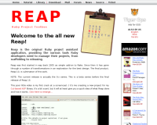
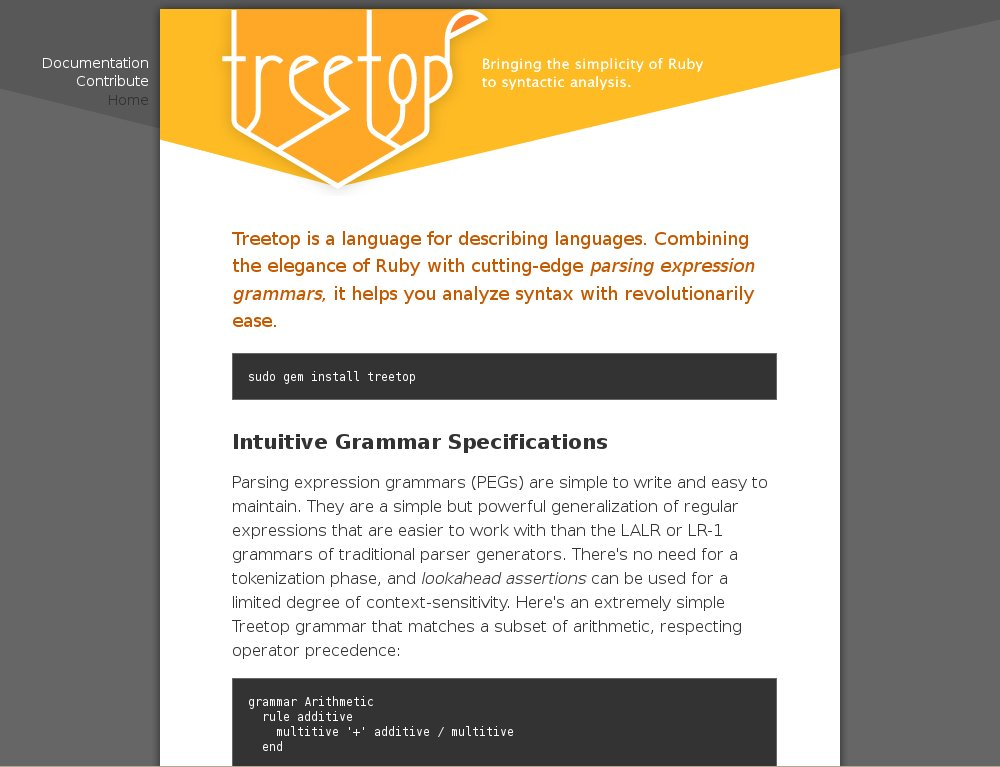

<!DOCTYPE html PUBLIC "-//W3C//DTD XHTML 1.0 Strict//EN"
    "http://www.w3.org/TR/xhtml1/DTD/xhtml1-strict.dtd">

<html xmlns="http://www.w3.org/1999/xhtml" xml:lang="en" lang="en-us">

<head>
  <meta http-equiv="content-type" content="text/html; charset=utf-8" />
  <meta http-equiv="content-type" content="text/html; charset=iso-8859-1" />

  <title>Ruby Facets</title>

  <!-- google verification-->
  <meta name="verify-v1" content="p14vW7GGMohDo2YKUHm0SXXTL+tzyPbKxxp35/WIQLA=" />

  <meta name="DESCRIPTION"
        content="Ruby Facets is a large collection of libraries for the Ruby programming lanaguage."/>

  <link rel="icon" href="/assets/images/favicon.ico" type="image/x-icon" />

  <link href="/atom.xml" rel="alternate" title="blog.facets.rubyforge.org" type="application/atom+xml" />

<!--
  <link href="/assets/styles/screen.css" media="screen, projection" rel="stylesheet" type="text/css" />
  <link href="/assets/styles/print.css"  media="print" rel="stylesheet" type="text/css" />
-->

  <!--[if IE]>
      <link href="/ie.css" media="screen, projection" rel="stylesheet" type="text/css" />
  <![endif]-->

  <link href="/assets/styles/site.css" rel="stylesheet" type="text/css" />
  <link href="/assets/styles/syntax.css" rel="stylesheet" type="text/css" />

  <!-- <script src="/js/rdocs.js" type="text/javascript"></script> -->
</head>

</body>
</html>

<body>

<div id="sidebar">
</div>

<div id="container">

  <div id="menu">
    <a href="/index.html">What's New</a> |
    <a href="/about.html">Overview</a> |
    <a href="/download.html">Download</a> |
    <a href="/learn.html">Documentation</a> |
    <a href="/endorse.html">Endorsements</a> |
    <a href="/community.html">Community</a> |
    <a href="/source.html">Development</a>
    
  </div>

  <div id="header">
    
  </div>

  <!-- <div id="drop_shadow"></div> -->

  <div id="content">
    
<div class="blurb">
  <div class="desc">
    <h1>Facets is for Everyone</h1>
    Who uses Facets? Lots of Rubyists do!
    <div class="small">Whether by copy-and-paste or direct dependency,
    the following is a brief list of just a few of the projects
    that have benefited from Facets.</div>
  </div>
</div>

<div class="page">

  <div style="margin: 40px 20px;">
    <a href="http://reap.rubyforge.org">
      
    </a>
    <a href="http://reap.rubyforge.org">Reap</a>
    <p>Reap is the orginal Ruby project assistant application. Now with a whole new modern
       design and increased automation, making it the easiest and more powerful tool ever.
    </p>
  </div>

  <br/>

  <div style="margin: 40px 20px;">
    <a href="http://treetop.rubyforge.org">
      
    </a>
    <a href="http://treetop.rubyforge.org">Treetop</a>
    <p>Treetop is a language for describing languages. Combining the elegance of Ruby
       with cutting-edge parsing expression grammars, it helps you analyze syntax
       with revolutionarily ease.
    </p>
  </div>

  <br/>

  <div style="margin: 40px 20px;">
    <a href="http://nitroproject.org">
      
    </a>
    <a href="http://treetop.rubyforge.org">Nitro/Og</a>
    <p>Nitro provides everything you need to create state-of-the-art
       Web 2.0 applications with ease and joy. Nitro applications are written using
       Ruby (server side) and Javascript (client side).
    </p>

    <p>Needs some help with Facets as it relates to Nitro/Og. Check out the
    <a href="http://nitroproject.com/fora/view/Facets">Nitro Facets Fora</a>.</p>
  </div>

  <div style="clear: both; margin-bottom: 30px;"></div>

  <div class="heading">
    
  </div>

</div>


  </div>

</div>

<div id="copyright">
  

  <br/><br/><br/>

  Copyright (c) 2005-2008 Thomas Sawyer &amp; Contributors <br/><br/>

  Ruby Facets was created by Thomas Sawyer (7rans), either written by hand or collected from a variety of Ruby resources.<br/>
  The system continues to be extended and improved by a diverse cast of open-source contributors.<br/><br/>

  Facets is released under the terms of the Ruby license, just like Ruby.<br/>
  The Ruby license is a dual GPLv2 license.<br/><br/>

  "Facets", "Ruby Facets" and "All Base Common" are trademarks of Thomas Sawyer. All rights reserved.

  <br/><br/>

  THIS SOFTWARE IS PROVIDED "AS IS" AND WITHOUT ANY EXPRESS OR
  IMPLIED WARRANTIES, INCLUDING, WITHOUT LIMITATION, THE IMPLIED
  WARRANTIES OF MERCHANTABILITY AND FITNESS FOR A PARTICULAR
  PURPOSE.
</div>

<script src="http://www.google-analytics.com/urchin.js" type="text/javascript">
</script>
<script type="text/javascript">
_uacct = "UA-2883355-2";
urchinTracker();
</script>

</body>
</html>

